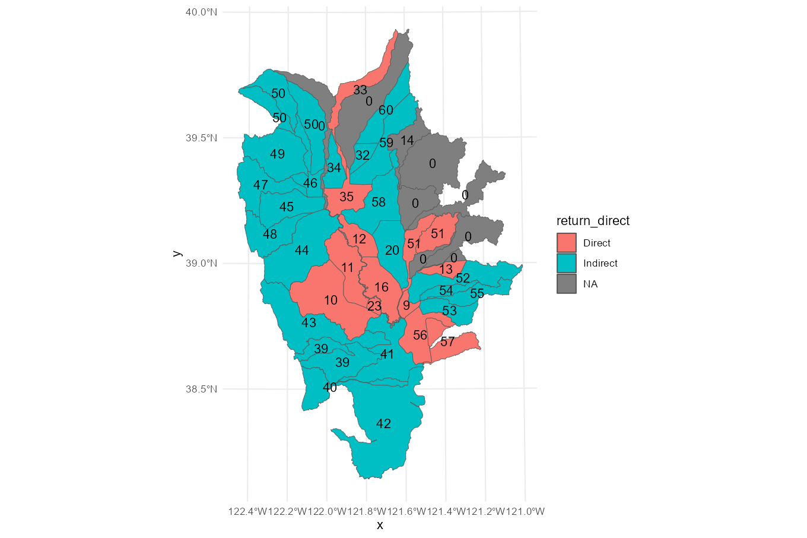
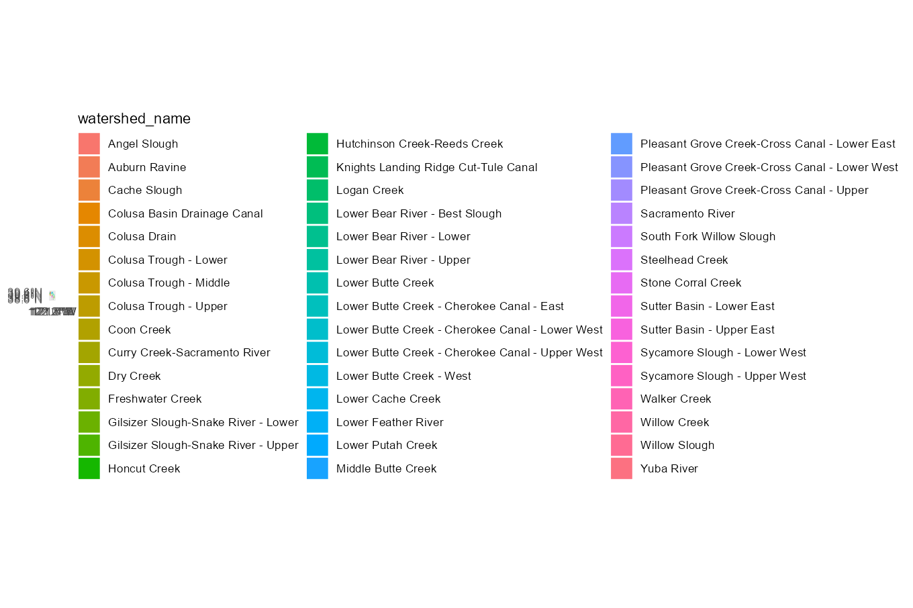
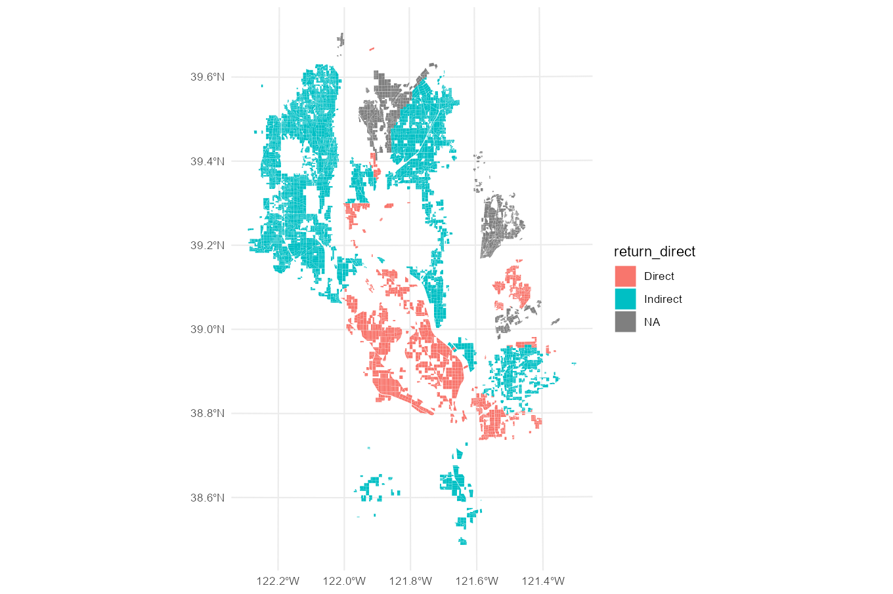

Data Structure and Joins
FlowWest
2023-08-15
joins.RmdThis vignette describes the structure of provided datasets and the possibilities for joining these datasets for further analysis.
Introduction
Four core datasets are provided: returns,
watersheds, fields, and
distances. The first three are spatial sf data
frames while distances is an ordinary tibble
data frame.
| dataset | type | unique id field | description |
|---|---|---|---|
returns |
sf Point |
return_id |
Return point geometries, flow types, indirect flow distances, and
downstream return_ids |
watersheds |
sf Polygon |
group_id |
Watershed geometries and return point return_ids |
fields |
sf Polygon |
unique_id |
Rice field geometries, areas, and watershed
group_ids |
distances |
tibble |
unique_id |
Rice field distance calculation results |
These four datasets are heirarchically nested and can be joined to
each other using the indicated *_id fields in order to
access all required data.

Finally, additional sf geometry layers are provided for
basemap and context purposes. These are:
| dataset | type | description |
|---|---|---|
streams |
sf Line |
Fish-bearing streams |
canals |
sf Line |
Selected secondary canals that connect indirect return points to their downstream returns to fish-bearing streams |
wetdry |
sf Polygon |
Polygons indicating the “wet” and “dry” areas of the Sacramento Valley based on levee locations |
Core datasets
Following are previews of the four core datasets
watersheds| group_id | huc10 | watershed_name | return_id | geometry |
|---|---|---|---|---|
| 1802015901 | 1802015901 | Honcut Creek | 0 | POLYGON ((6723475 2313975, … |
| 1802015902 | 1802015902 | Upper Feather River | 14 | POLYGON ((6693728 2351561, … |
| 1802015903 | 1802015903 | Hutchinson Creek-Reeds Creek | 51 | POLYGON ((6753204 2200420, … |
| 1802015904-N | 1802015904 | Gilsizer Slough-Snake River | 58 | POLYGON ((6668665 2188306, … |
| 1802015905 | 1802015905 | Lower Feather River | 0 | POLYGON ((6676057 2172657, … |
returns| return_name | return_id | ds_return_id | ds_fbs_dist | ds_fbs_name | geometry | return_direct |
|---|---|---|---|---|---|---|
| Sacramento River Deep Water Ship Channel | 1 | 1 | 0 | North Delta | POINT (6657346 1826703) | Direct |
| Sankey Diversion | 9 | 9 | 0 | Lower-mid Sacramento River | POINT (6674516 2046342) | Direct |
| Knights Landing Outfall Gates | 10 | 10 | 0 | Lower-mid Sacramento River | POINT (6640036 2053090) | Direct |
| Rough and Ready Pumping Plant | 11 | 11 | 0 | Lower-mid Sacramento River | POINT (6620645 2075877) | Direct |
| Drainage Pumping Plant RD 70 | 12 | 12 | 0 | Upper-mid Sacramento River | POINT (6600611 2151073) | Direct |
fields| unique_id | county | geometry | group_id | area_ac | volume_af |
|---|---|---|---|---|---|
| 1103539 | Glenn | POLYGON Z ((6526707 2289953… | 1802010405 | 23.428379 | 9.7618244 |
| 1102849 | Glenn | POLYGON Z ((6517766 2307611… | 1802010405 | 23.476331 | 9.7818048 |
| 1103353 | Glenn | POLYGON Z ((6501679 2309168… | 1802010405 | 1.055052 | 0.4396049 |
| 1103425 | Glenn | POLYGON Z ((6525986 2324730… | 1802010403 | 1.339829 | 0.5582621 |
| 1103546 | Glenn | POLYGON Z ((6535820 2277869… | 1802010403 | 48.900074 | 20.3750307 |
distances| unique_id | return_id | ds_fbs_dist | return_dis | totdist_ft | totdist_mi | fbs_name | totrect_ft | totrect_mi | return_rec | wet_dry |
|---|---|---|---|---|---|---|---|---|---|---|
| 1103539 | 49 | 261359.3 | 41551.08 | 302910 | 57.36932 | Lower-mid Sacramento River | 313082 | 59.29583 | 51722.97 | Dry |
| 1102849 | 49 | 261359.3 | 60092.43 | 321452 | 60.88106 | Lower-mid Sacramento River | 338263 | 64.06496 | 76903.48 | Dry |
| 1103353 | 49 | 261359.3 | 69094.19 | 330454 | 62.58598 | Lower-mid Sacramento River | 356374 | 67.49508 | 95015.08 | Dry |
| 1103425 | 50 | 266763.1 | 69576.62 | 336340 | 63.70076 | Lower-mid Sacramento River | 347698 | 65.85189 | 80935.41 | Dry |
| 1103546 | 50 | 266763.1 | 21439.70 | 288203 | 54.58390 | Lower-mid Sacramento River | 291136 | 55.13939 | 24372.46 | Dry |
Example joins
Following are example procedures used to join the different datasets.
These example assume that the tidyverse stack and
sf spatial library have been imported.
library(tidyverse)
library(sf)To access information about a watershed’s return flow, join the
watersheds dataset to the returns dataset
using return_id. Note that running
dplyr::left_join on an sf object requires
first converting it to an ordinary tibble using
sf::st_drop_geometry().
watersheds_returns <- watersheds |>
left_join(st_drop_geometry(returns), by=join_by(return_id))
ggplot() +
geom_sf(data=watersheds_returns, aes(fill=return_direct)) +
geom_sf_text(data=st_centroid(watersheds_returns), aes(label=return_id))
To access information about a rice field’s watershed, join the
fields dataset to the watersheds dataset using
group_id.
fields_watersheds <- fields |>
left_join(st_drop_geometry(watersheds), by=join_by(group_id))
ggplot() + geom_sf(data=fields_watersheds, aes(fill=watershed_name), color=NA)
To access information about a rice field’s return flow, first join
the fields dataset to the watersheds dataset
using group_id. Now that watershed information is joined,
join to the returns dataset using
return_id.
fields_returns <- fields |>
left_join(st_drop_geometry(watersheds), by=join_by(group_id)) |>
left_join(st_drop_geometry(returns), by=join_by(return_id))
ggplot() +
geom_sf(data=fields_returns, aes(fill=return_direct), color=NA)
To access the fields distance calculation results, simply join
fields to distances on
unique_id.
fields_distances <- fields |>
left_join(distances, by=join_by(unique_id))
ggplot() +
geom_sf(data=fields_distances, aes(fill=totdist_mi), color=NA)Basemap layers
The streams and canals layers display the
geometries of the fish-bearing streams and secondary canals.
streams| stream_id | stream_name | geometry |
|---|---|---|
| 5 | Big Chico Creek | MULTILINESTRING ((6634944 2… |
| 14 | Stony Creek | MULTILINESTRING ((6466284 2… |
| 19 | Feather River | MULTILINESTRING ((6708213 2… |
| 20 | Yuba River | MULTILINESTRING ((6765041 2… |
| 23 | American River | MULTILINESTRING ((6784150 1… |
canals| canal_id | canal_name | geometry |
|---|---|---|
| 9 | Natomas Cross Canal | LINESTRING (6695945 2064719… |
| 9 | Natomas Cross Canal | LINESTRING (6695220 2064156… |
| 10 | Main Canal | LINESTRING (6682739 2069936… |
| 10 | Main Canal | LINESTRING (6682832 2069755… |
| 11 | Hunters Creek 2 Diversion Canal | LINESTRING (6537828 2250408… |
These are recommended to be plotted along with the return points,
with corresponding coloration by Direct flow to
fish-bearing streams and Indirect flow to
secondary canals.
ggplot() +
geom_sf(data=streams, aes(color="Direct")) +
geom_sf(data=canals, aes(color="Indirect")) +
geom_sf(data=returns, aes(color=return_direct))The wetdry layer simply provides polygons outlining
“wet” (river/floodway-exposed) and “dry” (levee-protected) areas of the
Sacramento Valley.
wetdry| wet_dry | geometry |
|---|---|
| Dry | POLYGON Z ((6623854 2379216… |
| Dry | POLYGON Z ((6735708 2143171… |
| Dry | POLYGON Z ((6645812 2284995… |
| Dry | POLYGON Z ((6674774 2180693… |
| Dry | POLYGON Z ((6482270 2236010… |
ggplot() +
geom_sf(data=wetdry, aes(fill=wet_dry, color=wet_dry))